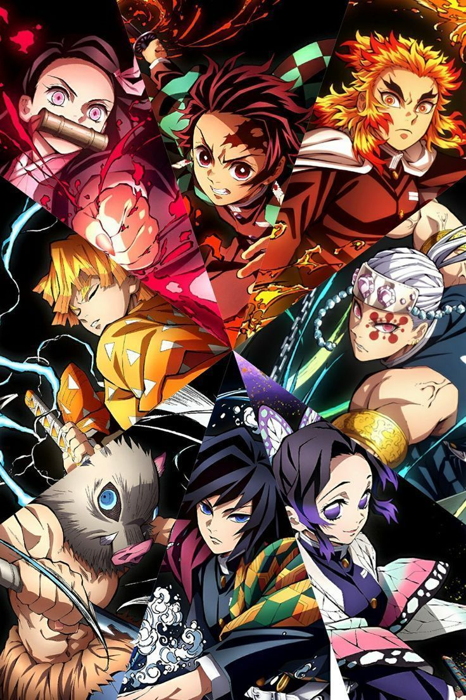

One Piece
One Piece es un anime de aventura y acción basado en el manga de Eiichiro Oda. Sigue la historia de Monkey D. Luffy, un joven pirata con el sueño de encontrar el legendario tesoro One Piece y convertirse en el Rey de los Piratas. Junto a su tripulación, los Sombrero de Paja, viaja por Grand Line enfrentando poderosos enemigos y descubriendo misterios del mundo.
Kimetsu no Yaiba
Kimetsu no Yaiba (Demon Slayer) sigue a Tanjiro Kamado, un joven cuya familia es masacrada por demonios. Tras descubrir que su hermana Nezuko ha sobrevivido pero convertida en demonio, Tanjiro se une a los Cazadores de Demonios para encontrar una cura y vengar a su familia.
Jujutsu Kaisen
Jujutsu Kaisen es un anime de acción y sobrenatural que sigue a Yuji Itadori, un estudiante que ingiere un objeto maldito y termina compartiendo su cuerpo con el poderoso espíritu Sukuna. Se une a la Escuela de Jujutsu para aprender técnicas de exorcismo y combate.
Haikyuu
Haikyuu!! es un anime deportivo que narra la historia de Shoyo Hinata, un joven apasionado por el voleibol que se une al equipo de Karasuno y lucha por convertirse en el mejor junto a su rival convertido en compañero, Tobio Kageyama.
Comic-Con Internacional
Un evento global que reúne a los mejores del anime, manga y cómics.
Agosto 2025
Más infoTokyo Game Show
El evento más grande de videojuegos con contenido de anime y cultura pop.
Octubre 2025
Más info| Noticias | Fecha | Fuente |
|---|---|---|
| One Piece Live Action confirma segunda temporada | 10 de marzo de 2025 | Crunchyroll |
| Kimetsu no Yaiba anuncia nueva película | 8 de marzo de 2025 | Anime News Network |
| Jujutsu Kaisen Season 3 en producción | 5 de marzo de 2025 | Otaku News |